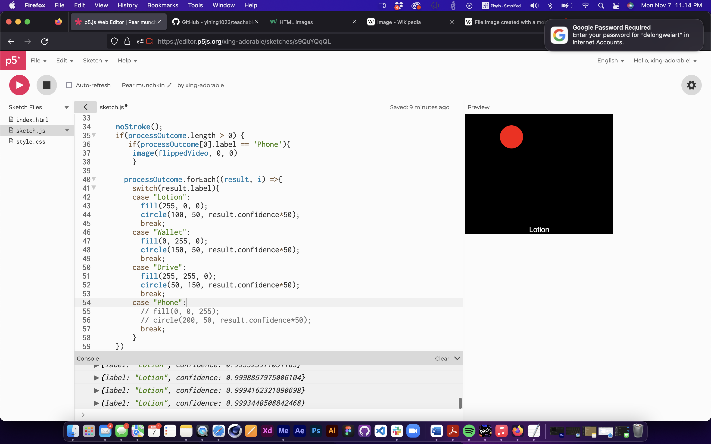
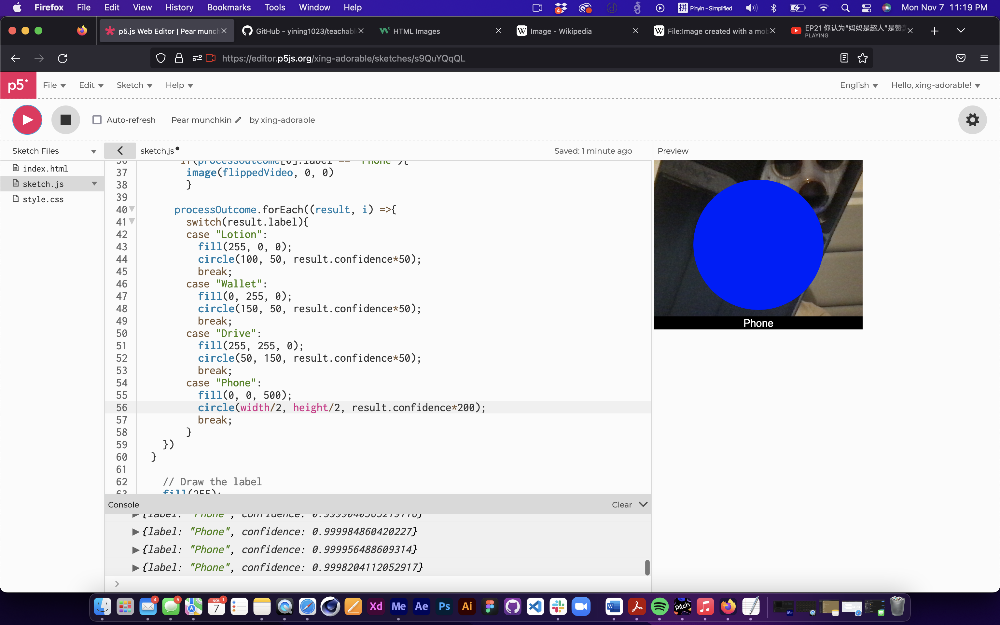
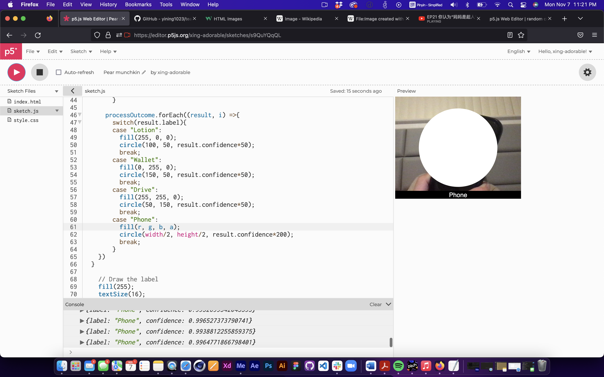
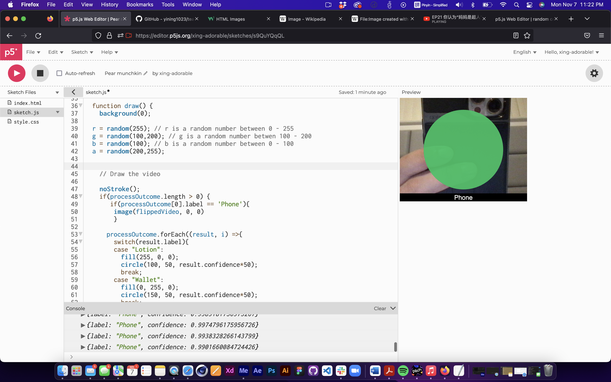
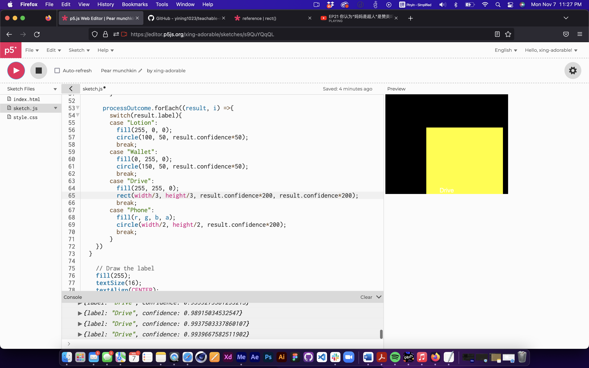
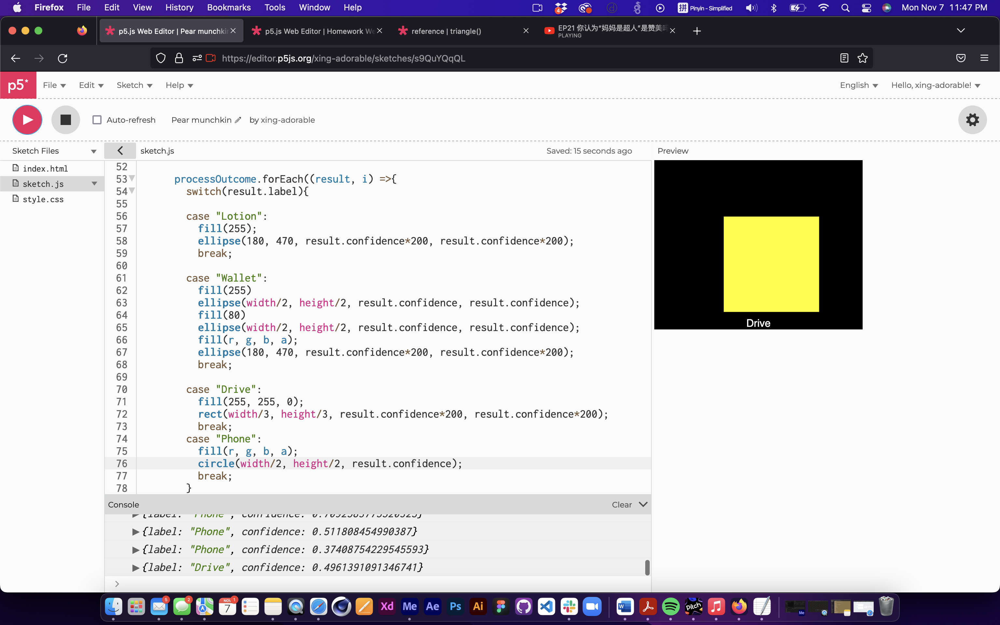
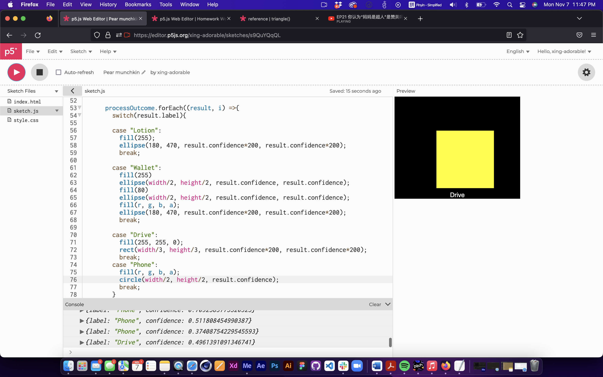
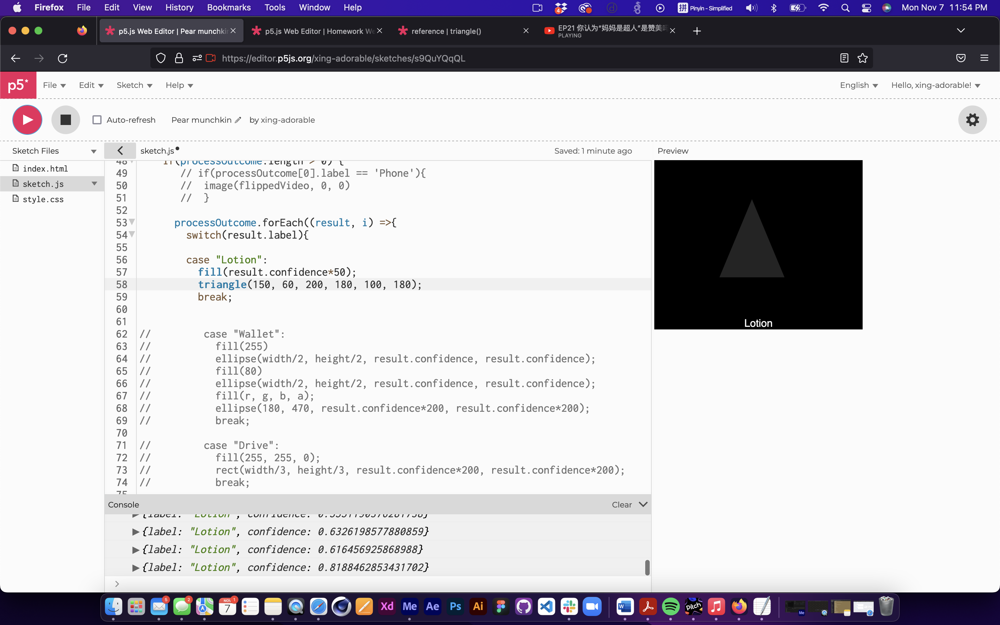
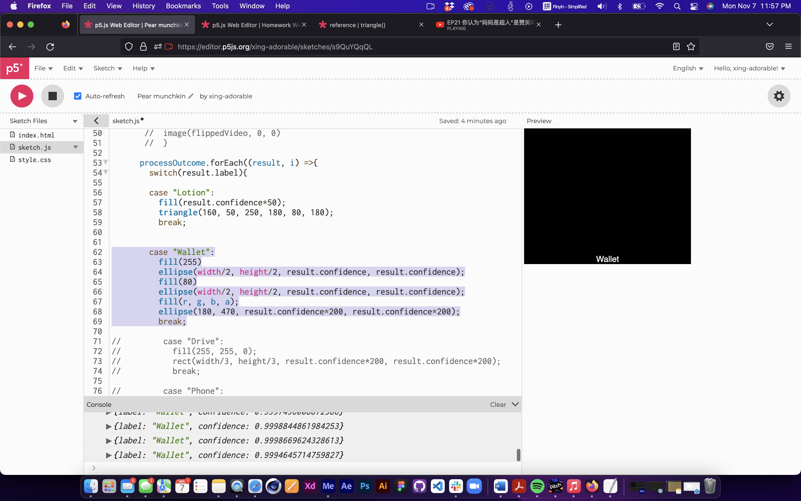
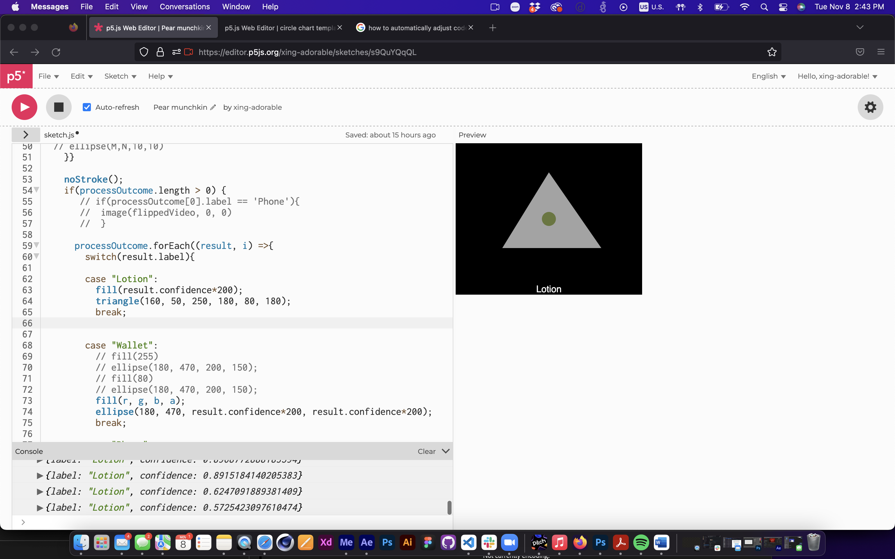

For this project I used teachable machine and p5js together, and use drive, wallet and lotion as the tracking objects.
1. the first step was to set up the shpapes after I imported the code from learnable machine.
    

2. after the shapes have been defined and placed in the position, I now start coding the interaction, use ojbect to trigger the movement or the color of the shapes.
  4. final output